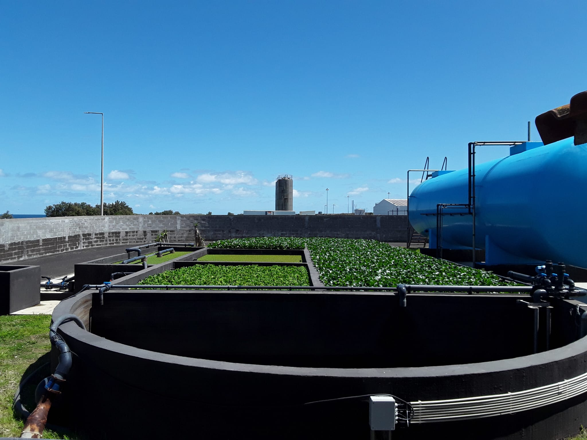

Em que consiste o projeto?
Tratamento de águas com uso da Biofiltragem
A Biofiltragem consiste na utilização de plantas aquáticas para remover nutrientes e poluentes presentes na água. Este processo gera:
- Menos consumo energético
- Produção de Biomassa
- Biomassa que através de compostagem gera composto rico para agricultura
- Reduz o impacto ambiental das actividades humanas

Sustentabilidade Ambiental
A abordagem de biofiltragem é sustentável, reduzindo a poluição e o consumo energético no tratamento das águas.
Melhoria da Qualidade da Água
O projeto visa a remoção eficaz de nutrientes e poluentes, resultando em água mais limpa e saudável para os ecossistemas.